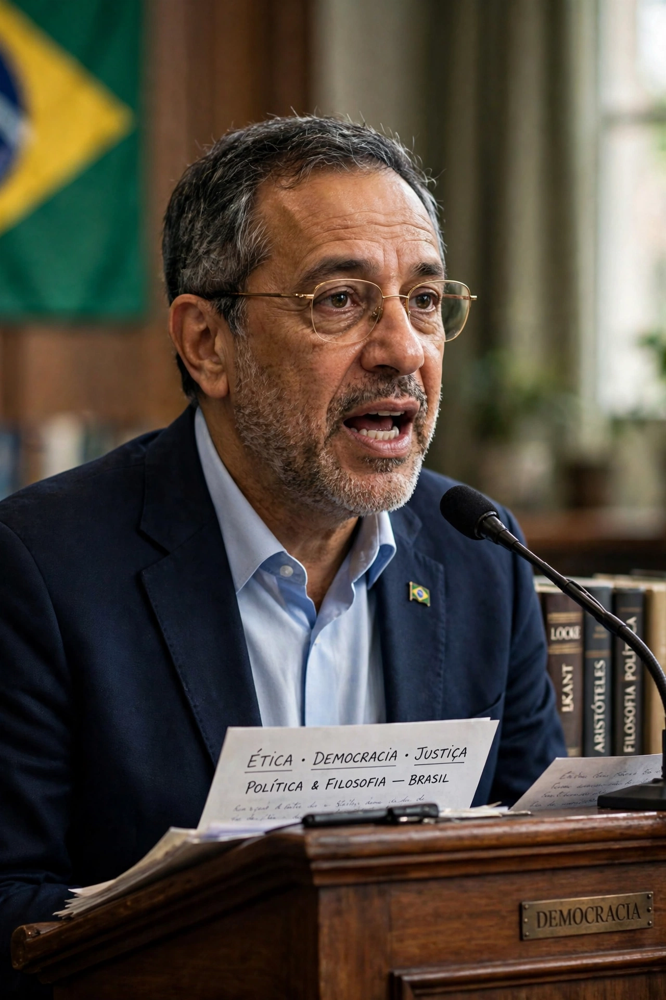

Roberto Mangabeira Unger

| Roberto Mangabeira Unger | |
|---|---|
| Born | 24 March 1947, Rio de Janeiro, Brazil |
| Occupation | Philosopher, jurist, politician |
| Institution | Harvard Law School |
| Notable works | False Necessity; The Left Alternative |
| Office | Minister of Strategic Affairs of Brazil (2007–09; 2015–16) |
Roberto Mangabeira Unger (born 24 March 1947) is a Brazilian philosopher, jurist and politician. A longtime professor at Harvard Law School, he is known for his work in legal theory and social theory, his critique of "false necessity" in social arrangements, and his advocacy of structural reform through what he calls empowered democracy.
Life and career
Unger was born in Rio de Janeiro into a politically prominent family. Educated in Brazil and the United States, he joined the Harvard Law School faculty in his twenties, becoming one of its youngest tenured professors. He was a central figure in the early Critical Legal Studies movement, though his constructive program of institutional reconstruction distinguished him from many of its members.
Thought
Across works such as Knowledge and Politics (1975), False Necessity (1987), Democracy Realized (1998), The Left Alternative (2009) and The Singular Universe and the Reality of Time (2014, with Lee Smolin), Unger argues that prevailing social and economic institutions are contingent and can be remade; that the economy of advanced knowledge production should be democratised rather than confined to an insiders' vanguard; and, in philosophy of nature, that time is real, singular, and all laws may change.
Politics
In Brazil, Unger helped found parties and repeatedly sought national leadership. He served as Minister of Strategic Affairs under President Luiz Inácio Lula da Silva (2007–2009) and again under Dilma Rousseff (2015–2016), and was an adviser in the presidential campaigns of Ciro Gomes.